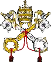

Web de la Santa Sede en español
|  | La Santa sede | Conferencia Episcopal | |
Web de la Santa Sede en español |
Conferencia episcopal española | ||
| Archidiocesis de Madrid | Basilica de S. Miguel | ||
| Web de la Archidiócesis de Madrid | Web de la Basílica Pontificia de San Miguel | ||
| Semana Santa de Madrid | |||
| Página de la archidiócesis sobre las hermandades y cofradías y sobre la Semana Santa | |||
| Los Gitanos | Gran Poder | ||
| Hermandad de Ntro. Padre Jesús de la Salud y María Santísima de Las Angustias “Los Gitanos” | Real, Ilustre y Fervorosa Hermandad y Cofradía de Nazarenos de Nuestro Padre Jesús del Gran Poder y María Santísima de la Esperanza Macarena | ||
| San Isidro | El Divino Cautivo | ||
| Real, Muy Ilustre y Primitiva Congregacion de San Isidro de Naturales de Madrid | Real Hermandad y Cofradía de Nazarenos de Nuestro Padre Jesús "El Divino Cautivo" | ||
| Cristo de los Alabarderos | |||
| Archicofradía Primaria de la Real e Ilustre Esclavitud de Ntro. Padre Jesús Nazareno de Medinaceli | Congregación del Santísimo Cristo de la Fe - Cristo de los Alabarderos y María Inmaculada, Reina de los Ángeles | ||
| El Silencio | Los Siete Dolores | ||
| Hermandad y Cofradía del Silencio del Santísimo Cristo de la Fe | Real Congregación de Esclavos de María Santísima de los Siete Dolores, Santísimo Cristo de la Agonía y Descendimiento de la Santa Cruz | ||
| La Soledad | Jesus el Pobre | ||
| Real e Ilustre Congregación de Nuestra Señora de la Soledad y el Desamparo y Santo Cristo del Sepulcro | Muy Ilustre, Fervorosa y Primitiva Hermandad y Cofradía de Nazarenos de Nuestro Padre Jesús Nazareno "El Pobre" y María Santísima del Dulce Nombre | ||
| Santa Cruz | Corte de Honor Almudena | ||
| Pontificia, Real y Primitiva Archicofradía del Glorioso Patriarca San José, Santísimo Cristo de la Vida Eterna y María Santísima de la Paz | Corte de Honor de Santa María Real de la Almudena | ||